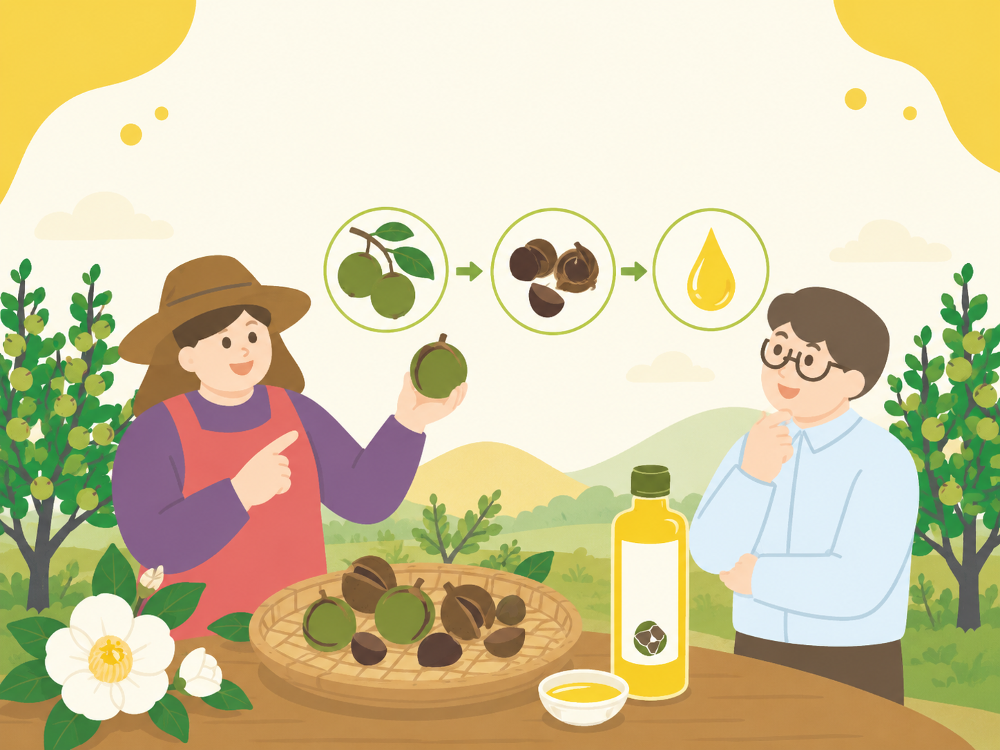

← 文章總覽
油茶栽培與轉作
油茶栽培管理
田區選擇、種苗、行株距、定植與幼苗保護的實務筆記。
4 篇文章

油茶栽培管理 · 田區選擇
油茶適合種在哪裡？田區條件與區位選擇
油茶適合種在哪裡？田區條件與區位選擇 適地比勉強種植更重要油茶是多年生木本作物，種植地選錯，後續會長期承受管理壓力。適合油茶的田區，通常需要良好日照、適度水分、…
閱讀文章 →
油茶栽培管理 · 種苗選擇
油茶種苗怎麼選？實生苗、扦插苗、嫁接苗的差異
油茶種苗怎麼選？實生苗、扦插苗、嫁接苗的差異 種苗決定長期管理起點油茶是長期作物，種苗選擇會影響未來多年管理。苗木不是只看價格，也要看來源、品系、根系、健康狀態…
閱讀文章 →
油茶栽培管理 · 行株距
油茶種植密度與行株距怎麼抓？
油茶種植密度與行株距怎麼抓？ 不要只看幼苗時的空間油茶剛種下時，苗木很小，田區看起來空曠，農友常會想多種一些。但油茶是長期木本作物，樹冠會逐年擴大，根系也會發展…
閱讀文章 →
油茶栽培管理 · 開墾與定植
油茶定植怎麼做？整地、植穴、支架與幼苗保護
油茶定植不是把苗木放進土裡就完成。田區整地、植穴大小、土球保護、支架固定、覆草保濕與幼苗保護，都會影響前幾年的存活率與樹勢。…
閱讀文章 →
回到文章總覽
看更多「油茶栽培與轉作」分類